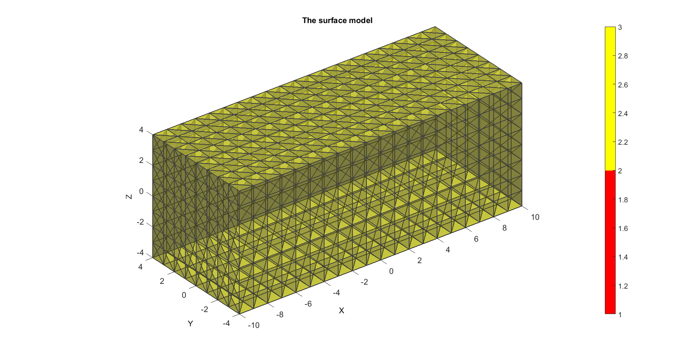
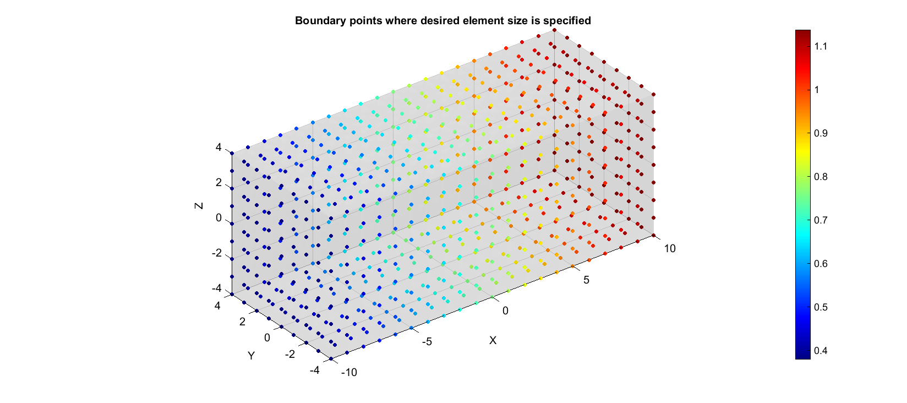
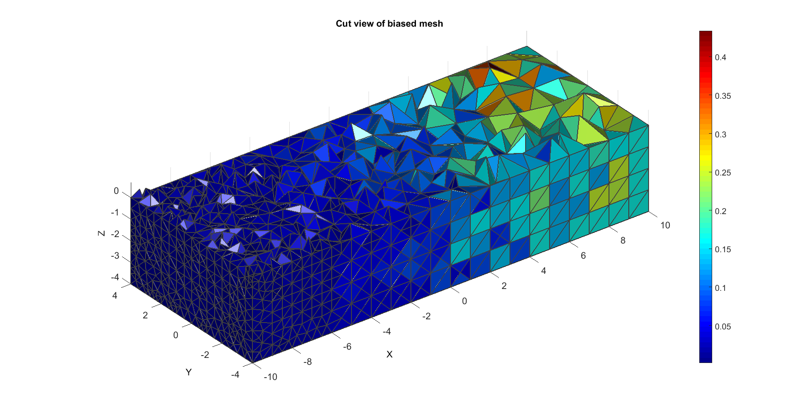

DEMO_tetGen_mesh_sizing_function_1
Below is a demonstration for:
- The use of TETgen for meshing based on surface geometry
- Biasing the mesh density using a size function specified on the boundary nodes
Contents
clear; close all; clc;
Plot settings
figColor='w'; figColorDef='white'; fontSize=15; faceAlpha1=0.5; faceAlpha2=0.5; edgeColor=0.25*ones(1,3); edgeWidth=1.5; % path names filePath=mfilename('fullpath'); savePath=fullfile(fileparts(filePath),'data','temp');
%Specifying dimensions and number of elements
sampleWidth=20;
sampleThickness=8;
sampleHeight=8;
pointSpacing=1;
numElementsWidth=round(sampleWidth/pointSpacing);
numElementsThickness=round(sampleThickness/pointSpacing);
numElementsHeight=round(sampleHeight/pointSpacing);
Defining the surface models
The model will consists of two spheres one contained within the other defining two material regions. A stiff core and a soft outer later.
% Creating a meshed box (4-node tetrahedral elements) boxDim=[sampleWidth sampleThickness sampleHeight]; %Dimensions boxEl=[numElementsWidth numElementsThickness numElementsHeight]; %Number of elements [Fq,Vq,faceBoundaryMarker_q]=quadBox(boxDim,boxEl); [F,V]=quad2tri(Fq,Vq,'f'); faceBoundMarker1=2; faceBoundaryMarker=faceBoundMarker1*ones(size(F,1),1); %Create boundary markers for faces
Plotting surface models
hf=figuremax(figColor,figColorDef); title('The surface model','FontSize',fontSize); xlabel('X','FontSize',fontSize); ylabel('Y','FontSize',fontSize); zlabel('Z','FontSize',fontSize); hold on; patch('Faces',F,'Vertices',V,'FaceColor','flat','CData',faceBoundaryMarker,'FaceAlpha',faceAlpha1,'lineWidth',edgeWidth,'edgeColor',edgeColor); % [hp]=patchNormPlot(F,V,0.25); colormap(autumn(2)); colorbar; camlight headlight; set(gca,'FontSize',fontSize); view(3); axis tight; axis equal; grid on;
Defining a size function on the boundary nodes
%Get edge lengths and base minimum size on input edge lengths [edgeLengths]=patchEdgeLengths(F,V); minEdgeSize=mean(edgeLengths)/3; %The smallest element size n=3; %The largest element edge length is n times minEdgeSize edgeSizeField=V(:,1); edgeSizeField=edgeSizeField-min(edgeSizeField(:)); edgeSizeField=edgeSizeField./max(edgeSizeField(:)); edgeSizeField=(edgeSizeField*(n-1))+1; %Range from 0-n depending on V(:,1) i.e. X-dir edgeSizeField=(edgeSizeField*minEdgeSize);
Plotting surface models
hf=figuremax(figColor,figColorDef); title('Boundary points where desired element size is specified','FontSize',fontSize); xlabel('X','FontSize',fontSize); ylabel('Y','FontSize',fontSize); zlabel('Z','FontSize',fontSize); hold on; patch('Faces',F,'Vertices',V,'FaceColor',0.5*ones(1,3),'FaceAlpha',0.1,'edgeColor','none'); scatter3(V(:,1),V(:,2),V(:,3),25,edgeSizeField,'fill') colormap(jet(250)); colorbar; camlight headlight; set(gca,'FontSize',fontSize); view(3); axis tight; axis equal; grid on;
CREATING A SOLID TETRAHEDRAL MESH USING TETGEN
inputStruct.stringOpt='-pq1.1Aa'; inputStruct.Faces=F; inputStruct.Nodes=V; inputStruct.sizeData=edgeSizeField; inputStruct.holePoints=[]; inputStruct.faceBoundaryMarker=faceBoundaryMarker; %Face boundary markers inputStruct.regionPoints=[0 0 0]; %region points
Mesh model using tetrahedral elements using tetGen
[meshOutput]=runTetGen(inputStruct); %Run tetGen
%%%%%%%%%%%%%%%%%%%%%%%%%%%%%%%%%%%%%%%%%%%%% --- TETGEN Tetrahedral meshing --- 21-Oct-2014 16:32:54 %%%%%%%%%%%%%%%%%%%%%%%%%%%%%%%%%%%%%%%%%%%%% --- Writing SMESH file --- 21-Oct-2014 16:32:54 ----> Adding node field ----> Adding facet field ----> Adding holes specification ----> Adding region specification --- Done --- 21-Oct-2014 16:32:54 --- Writing MTR file --- 21-Oct-2014 16:32:54 --- Running TetGen to mesh initial Delaunay tesselation using sizing function--- 21-Oct-2014 16:32:54 Opening D:\MATLAB\GIBBON\trunk\lib_ext\tetGen\tempFiles\temp.smesh. Opening D:\MATLAB\GIBBON\trunk\lib_ext\tetGen\tempFiles\temp.mtr. Cannot access file D:\MATLAB\GIBBON\trunk\lib_ext\tetGen\tempFiles\temp.b.node. Delaunizing vertices... Delaunay seconds: 0.012 Creating surface mesh ... Surface mesh seconds: 0.002 Constrained Delaunay... Constrained Delaunay seconds: 0.004 Removing exterior tetrahedra ... Spreading region attributes. Exterior tets removal seconds: 0 Refining mesh... Refinement seconds: 0.115 Optimizing mesh... Optimization seconds: 0.018 Writing D:\MATLAB\GIBBON\trunk\lib_ext\tetGen\tempFiles\temp.1.node. Writing D:\MATLAB\GIBBON\trunk\lib_ext\tetGen\tempFiles\temp.1.ele. Writing D:\MATLAB\GIBBON\trunk\lib_ext\tetGen\tempFiles\temp.1.face. Writing D:\MATLAB\GIBBON\trunk\lib_ext\tetGen\tempFiles\temp.1.edge. Writing D:\MATLAB\GIBBON\trunk\lib_ext\tetGen\tempFiles\temp.1.mtr. Writing D:\MATLAB\GIBBON\trunk\lib_ext\tetGen\tempFiles\temp.1.p2t. Output seconds: 0.089 Total running seconds: 0.24 Statistics: Input points: 770 Input facets: 1536 Input segments: 144 Input holes: 0 Input regions: 1 Mesh points: 5327 Mesh tetrahedra: 27685 Mesh faces: 57195 Mesh faces on exterior boundary: 3650 Mesh faces on input facets: 3650 Mesh edges on input segments: 205 Steiner points on input facets: 996 Steiner points on input segments: 61 Steiner points inside domain: 3500 --- Done --- 21-Oct-2014 16:32:54 %%%%%%%%%%%%%%%%%%%%%%%%%%%%%%%%%%%%%%%%%%%%% --- Importing TetGen files --- 21-Oct-2014 16:32:54 --- Done --- 21-Oct-2014 16:32:54
Accessing the model element and patch data
FT=meshOutput.faces; Fb=meshOutput.facesBoundary; Cb=meshOutput.boundaryMarker; VT=meshOutput.nodes; E=meshOutput.elements; elementMaterialIndices=meshOutput.elementMaterialID;
Calculate element volumes for display purposes
C=tetVol(E,VT);
Plotting the meshed geometry
%Selecting half of the model to see interior X=VT(:,3); XE=mean(X(E),2); L=XE<mean(X(:)); [Fs,Cs]=element2patch(E(L,:),C(L),'tet4'); hf1=figuremax(figColor,figColorDef); title('Cut view of biased mesh','FontSize',fontSize); xlabel('X','FontSize',fontSize); ylabel('Y','FontSize',fontSize); zlabel('Z','FontSize',fontSize); hold on; hps=patch('Faces',Fs,'Vertices',VT,'FaceColor','flat','CData',Cs,'lineWidth',edgeWidth,'edgeColor',edgeColor); view(3); axis tight; axis equal; grid on; colormap(jet); colorbar; camlight headlight; set(gca,'FontSize',fontSize); drawnow;

GIBBON www.gibboncode.org
Kevin Mattheus Moerman, gibbon.toolbox@gmail.com